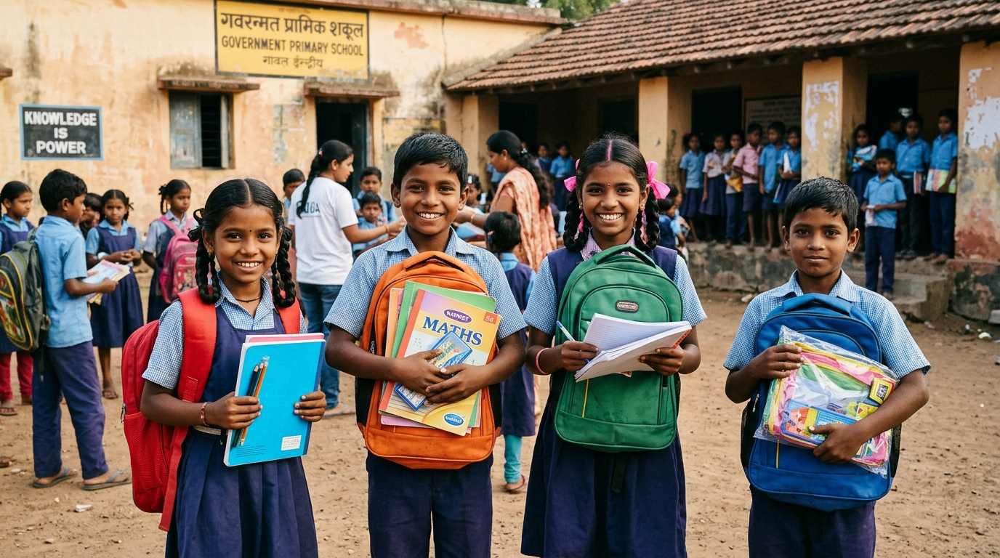

⭐ Spotlight Story

Education Relief and Humanitarian Aid: Why Children Need Both
In times of crisis and displacement, humanitarian aid provides immediate survival while educational relief protects a child’s long-term future. Discover why children urgently need both to maintain learning continuity, psychological stability, and hope.
Read Full Article